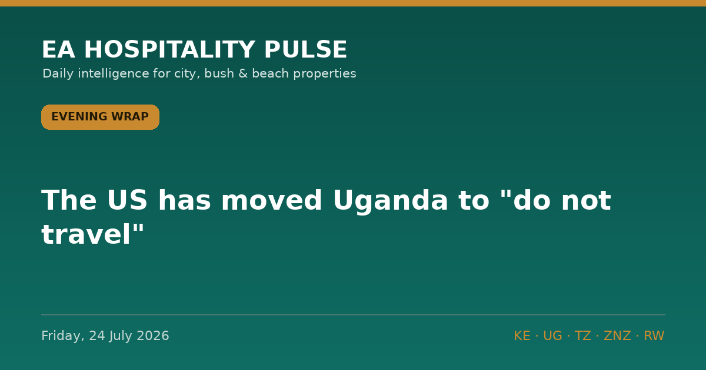

← All editionsThe US has moved Uganda to "do not travel".
The US has moved Uganda to "do not travel". Tonight's wrap is about what advisory shocks do to booking curves — and what to do in the first 72 hours.
━━━━━━━━━
1️⃣ US PUTS UGANDA AT LEVEL 4, RWANDA AT LEVEL 3
The State Department now urges Americans not to travel to Uganda and to reconsider Rwanda, citing the Ebola Bundibugyo outbreak in the region (travel.state.gov). The CDC has barred US-bound boarding for anyone who was in DRC within 21 days, and South Africa has introduced health forms for arrivals from affected countries (per Tourism Update). Expect North American cancellations and insurer exclusions first; gorilla-trekking itineraries are most exposed, with Kampala and Kigali MICE next in line.
🎯 So what: In the next 72 hours: audit Q3–Q4 US-market bookings, offer free date changes into 2027 before refund demands land, put your health protocols in writing to agents, and check FCDO and German AA positions tonight — advisory divergence is common and buys you nuance with European guests.
🏷 Bush + City | UG, RW (spillover KE/TZ) | Confirmed
2️⃣ KENYA'S NEW FLIGHT TAXES ARE ALREADY COSTING BOOKINGS
Higher passenger service charges and aviation levies are feeding into fares, and operators report clients shortening stays and trimming budgets (per Tourism Update, quoting Private Safaris and HotelOnline). International visitor spend was roughly US$5bn in 2025 — the industry's argument is that taxing the flight taxes the funnel.
🎯 So what: Don't absorb fare pain with room discounts. Defend rate and compete on length-of-stay value — third-night offers and full-board bundles beat cutting ADR.
🏷 City + Bush + Beach | KE | Reported
3️⃣ NEW BRIDGE HALVES A SERENGETI TRANSFER ROUTE
Tourism Update reports (24 Jul) a new bridge cutting a key Serengeti transfer time in half — headline stage only, detail to follow. Shorter transfers lift guest satisfaction scores and open new two-park pairings.
🎯 So what: TZ lodge owners: ask your DMCs this week whether revised routings change pickup economics for migration season.
🏷 Bush | TZ | Early signal
━━━━━━━━━
— EA Hospitality Pulse | Daily intelligence for city, bush & beach properties
📣 Telegram (full editions) 💬 WhatsApp (daily skim) 💼 LinkedIn (the Big Read) 🗂 Every edition